Laser wysokoenergetyczny (HILT)
Głęboko penetruje tkanki. Działa przeciwbólowo, przeciwzapalnie i regenerująco, w stanach ostrych i przewlekłych.
ul. Dr. L. Rutkowskiego 6, 09-100 Płońsk
Rejestracja: 731 100 801
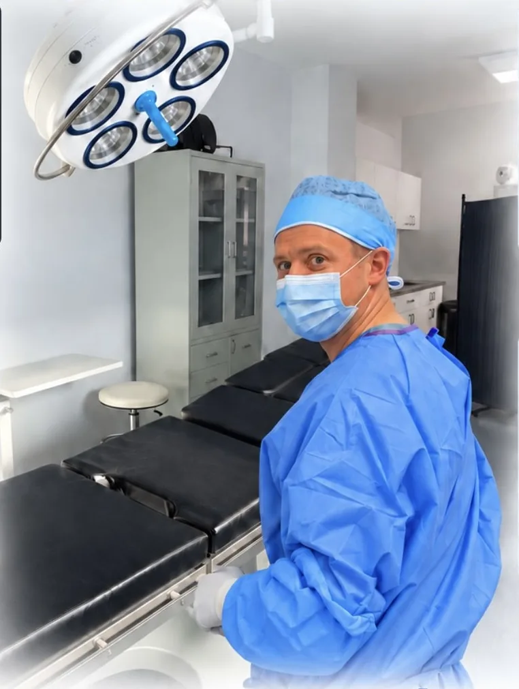
Płońsk, ul. Dr. L. Rutkowskiego 6
Poradnie lekarskie specjalistyczne, badania densytometrii, USG i EMG dorosłych i dzieci oraz zabiegi specjalistyczne w zakresie ortopedii, dermatologii, chirurgii ogólnej i naczyniowej.
Prywatne gabinety lekarzy kilkunastu specjalności pod jednym adresem. Wizyty po wcześniejszym umówieniu w rejestracji.
W docelowej stronie każdy gabinet ma własną podstronę: zakres leczenia, doświadczenie lekarza i cennik.
Prywatny Gabinet Fizjoterapii mgr Magdaleny Szewczyk. Rehabilitacja dorosłych i młodzieży po urazach, operacjach i w chorobach neurologicznych.
Każdą terapię poprzedza dokładna diagnostyka funkcjonalna i wywiad medyczny.
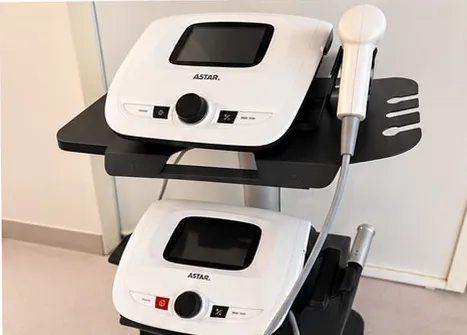
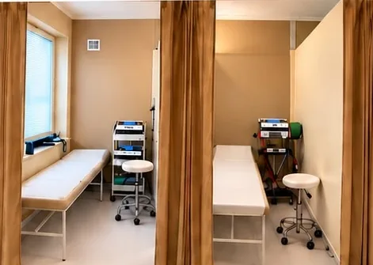
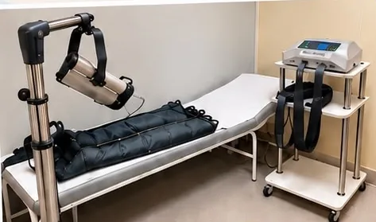
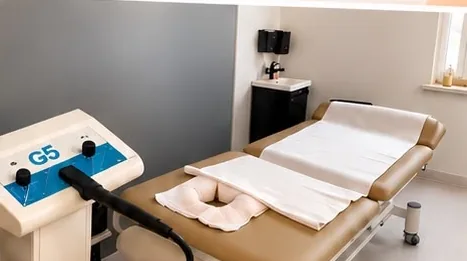
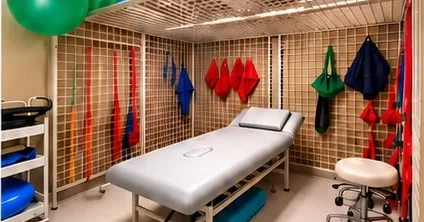
Głęboko penetruje tkanki. Działa przeciwbólowo, przeciwzapalnie i regenerująco, w stanach ostrych i przewlekłych.
Przewlekłe stany zapalne, zwapnienia i zmiany przeciążeniowe, np. ostroga piętowa, łokieć tenisisty.
Pole elektromagnetyczne głęboko ogrzewa tkanki, rozszerza naczynia, rozluźnia bolesne skurcze mięśni.
Zmniejsza obrzęki, wspomaga drenaż limfatyczny i krążenie krwi.
Prądy lecznicze, m.in. TENS, interferencyjne i diadynamiczne: stymulują mięśnie i blokują bodźce bólowe.
Wspomagają zrost kostny, gojenie i regenerację tkanek.
Drenaż pneumatyczny kończyn przy obrzękach.
Także terapia mięśniowo-powięziowych punktów spustowych przy bólu rzutowanym.
Taśmy wspomagające pracę mięśni, stabilizujące stawy, zmniejszające ból, obrzęki i krwiaki.
Rozluźnianie napięć powięziowych.
Wieloletnie doświadczenie w pracy z pacjentami ortopedycznymi, neurologicznymi i po urazach. Indywidualne podejście do każdego problemu zdrowotnego.
Osteoporoza długo nie daje żadnych dolegliwości. Często pierwszym sygnałem jest złamanie po zwykłym upadku. Densytometria pozwala wykryć ją wcześniej i ocenić 10-letnie ryzyko złamań (FRAX).
Badanie wykonujemy na aparacie GE Lunar Prodigy. Jest bezpieczne i bezbolesne, trwa krótko i nie wymaga specjalnego przygotowania. Najczęściej ocenia się szyjkę kości udowej i odcinek lędźwiowy kręgosłupa (L1-L4).
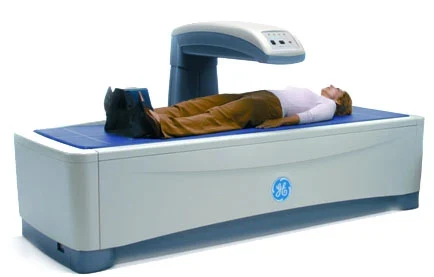
Poradnię osteoporozy i chorób metabolicznych kości prowadzi lek. Jacek Borowicz, specjalista densytometrii klinicznej z certyfikatem ISCD. Od 1997 roku kieruje pracowniami densytometrycznymi.
Badania wykonują lekarze specjaliści na aparatach Alpinion X-CUBE 60 i Sonoscape S8 EXP z głowicami wysokiej częstotliwości. Aparat ma m.in. Color Doppler, Doppler pulsacyjny i ciągły oraz elastografię tkanek miękkich.
jamy brzusznej, tarczycy, piersi, węzłów chłonnych i ślinianek, jąder, układu moczowego, doppler naczyń szyjnych i kończyn
USG narządu ruchu, USG bioder u niemowląt
USG dzieci i noworodków, USG przezciemiączkowe
USG doppler naczyń obwodowych
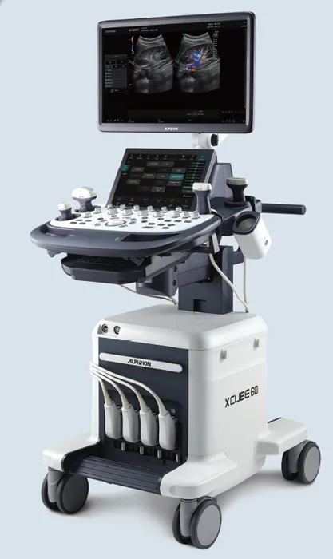
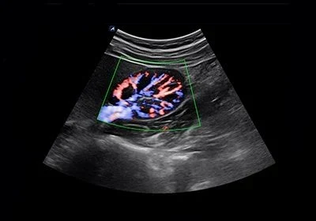
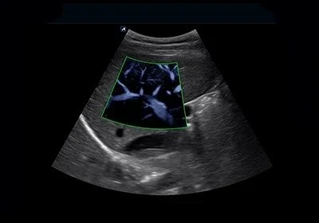
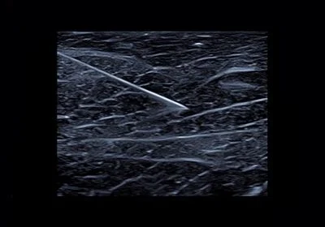
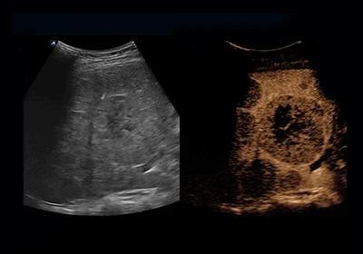
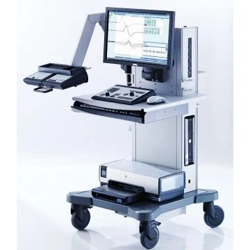
Elektromiografia ocenia przewodzenie w nerwach obwodowych i czynność mięśni. To rutynowe, małoinwazyjne badanie, które pokazuje rodzaj, miejsce i stopień uszkodzenia nerwu lub mięśnia.
lek. Milena Wyszczelska-Namiętaneurologia, EMG dorosłych
lek. Magdalena Ogrodnikneurologia dziecięca, EMG/NCS dzieci
Zabiegi w znieczuleniu miejscowym w nowej sali chirurgicznej i w gabinetach zabiegowych Ostmedica.
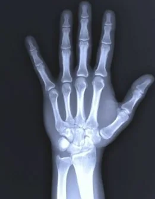
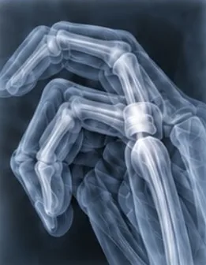
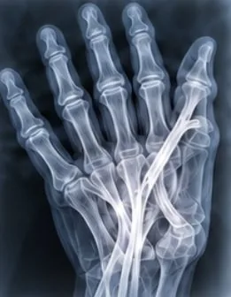
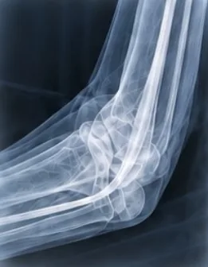
Operacje ręki w znieczuleniu miejscowym: zespół cieśni nadgarstka, palce zatrzaskujące, przykurcz Dupuytrena, uwolnienie nerwu łokciowego. Także iniekcje PRP i kwasu hialuronowego pod kontrolą USG.
lek. Łukasz Cieślak, ortopedia i traumatologia narządu ruchu
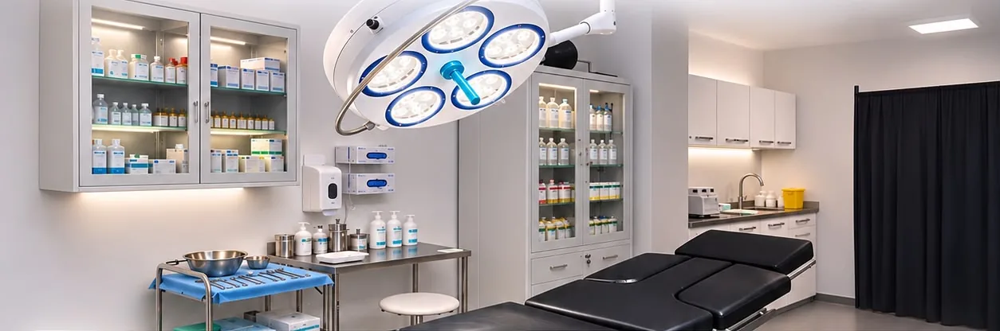
Małoinwazyjne leczenie żylaków: skleroterapia i miniflebektomia, USG doppler naczyń obwodowych oraz drobne zabiegi chirurgiczne. Leczenie ran przewlekłych, także przy stopie cukrzycowej.
lek. Svitlana Korobova; dr n. med. Krzysztof Ostrowski
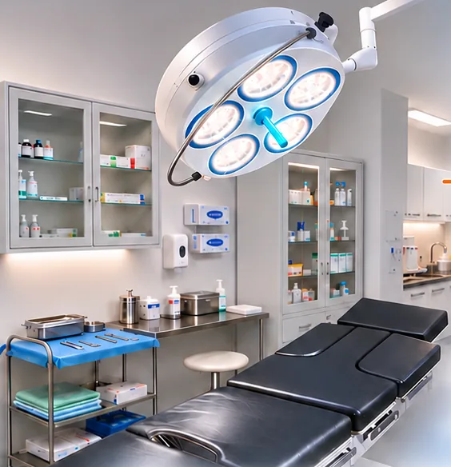
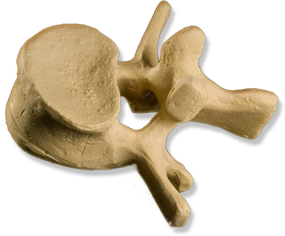
Kriolezja kręgosłupa pod kontrolą USG, blokady kręgosłupa, leczenie chorób nerwów obwodowych i zespołów bólowych twarzy i głowy.
lek. Bartosz Czapski, neurochirurg, specjalista interwencyjnego leczenia bólu (CIPS, EDPM)
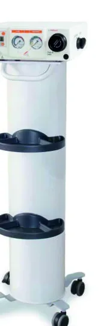
Wymrażanie zmian skórnych podtlenkiem azotu (aparat CRYO-S Classic), w większości przypadków bez znieczulenia: brodawki i kurzajki, włókniaki, niektóre znamiona i blizny, zmiany naczyniowe.
lek. Justyna Śliwiak-Chmura; lek. Łukasz Pacek
Videofiberoskopia, także u dzieci. Operacje nosa i zatok, korekta przegrody nosa, usuwanie migdałków, zabiegi krtani i podniebienia przy chrapaniu.
dr n. med. Rafał Brzeziński, otolaryngolog, chirurg głowy i szyi
Kwas hialuronowy, toksyna botulinowa, nici rewitalizujące i liftingujące.
dr n. med. Krzysztof Ostrowski
Rejestracja telefoniczna. Wizyty po wcześniejszym umówieniu.